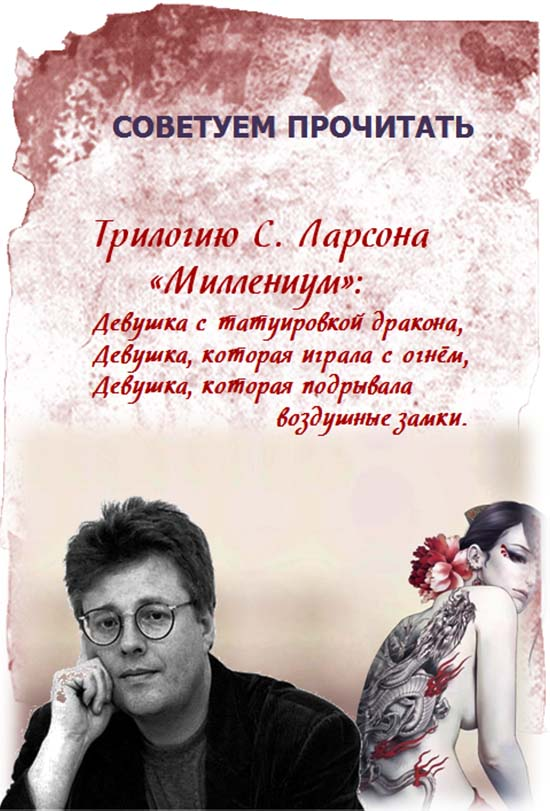

|

Шведский писатель Стиг Ларссон написал две книги из
десяти задуманных, а работа над третьей близилась к
завершению, когда он обратился в издательство «Piratforlaget»
с предложением о заключении контракта и получил отказ,
который теперь считается одной из крупнейших ошибок в
истории шведского книжного бизнеса. Умерев в 2004 г., Стиг
Ларссон не успел увидеть, как его романы продаются
баснословными тиражами, переводятся на десятки языков,
экранизируются, завоевывая симпатии миллионов читателей и
зрителей.
В первой книге трилогии «Девушка с татуировкой
дракона» один из главных героев – журналист Микаэль Блумквист,
сотрудник журнала «Миллениум», был приговорен к трем месяцам
тюремного заключения и выплате крупного денежного штрафа за
публикацию материалов о крупном промышленнике Хансе Эрике
Веннерстреме, которые были признаны сфабрикованными. Вокруг
журнала разразился скандал, и Блумквист решает покинуть на время
журнал, несмотря на протесты главного редактора и друга Эрики
Бергер и других сотрудников.
Глава концерна «Вангер» обращается в агентство «Милтон
секьюрити» с просьбой собрать информацию о М. Блумквисте. Сбором
материала занимается лучший сотрудник агентства Лисбет Саландер,
позже получающая предложение приехать на остров Хедебю к Хенрику
Вангеру и провести расследование происшедшего сорок лет назад
убийства Харриет Вангер, племянницы Х. Вангера. В убийстве
подозревается один из членов семьи Вангеров.
Лисбет Саландер, двадцатишестилетняя девушка, находится под
опекой ввиду признания ее недееспособной. Она не получила аттестата
об окончании школы. В 12-летнем возрасте была помещена в закрытую
психиатрическую больницу, где провела несколько лет, что явилось
результатом заговора секретных служб Стокгольма, причина которого
становится понятной во второй книге. В действительности она очень
умна, у нее фотографическая память, незаурядные математические
способности, она – лучший хакер в Швеции, известный в сети под
именем «Оса». Первым опекуном Лисбет был адвокат Хольгер
Пальмгрен, который сумел оценить по достоинству эту необыкновенную
девушку и полюбить её. Он предоставил ей право самостоятельно
распоряжаться финансами и поступать по своему усмотрению,
доверяя ей и считая, что она справится с любыми трудностями. Ситуация
резко изменилась после того, как Лисбет был назначен новый опекун –
адвокат Нильс Бьюрман. Считая Лисбет ограниченной и беззащитной,
используя свою власть над ней и угрожая поместить её в
психиатрическую лечебницу, Бьюрман совершил акт жестокого насилия,
который едва не стоил ей жизни. Но Л. Саландер сумела записать это
скрытой камерой и, угрожая передать диск в полицию и СМИ, заставила
Н. Бьюрмана играть по своим правилам. Это привело к драматическим
событиям, о которых рассказывается во второй книге трилогии.
Объединившись, Микаэль и Лисбет выясняют, что Харриет Вангер
жива. Она вынуждена была бежать с острова, спасаясь от преследования
своего брата Мартина Вангера. В ходе расследования они раскрывают
ряд убийств разных лет и обнаруживают причастность к ним Мартина
Вангера – маньяка-садиста, серийного убийцы женщин. М. Блумквист
попадает к нему в ловушку, и только решительные действия Л. Саландер
спасают ему жизнь.
Лисбет помогает добыть материалы о преступной деятельности
Х. Э. Веннерстрема, после опубликования которых ему грозит тюремное
заключение. Рейтинг «Миллениума» резко возрастает, а М. Блумквист
становится знаменитостью.
В романе интересно развиваются личные взаимоотношения главных
героев: М. Блумквиста,Э. Бергер и Л. Саландер. Сложный, но безупречно
сотканный сюжет, непростые характеры героев, запутанные личные
взаимоотношения делают роман удивительно интересным.
Вторая книга трилогии «Девушка, которая играла с огнем»
начинается повествованием о длительном путешествии Лисбет Саландер
и возвращении её в Стокгольм. Ночью она тайно посещает квартиру
Н. Бьюрмана и обнаруживает у него пистолет, на котором остаются её
отпечатки пальцев.
В редакцию «Миллениума» обращается журналист Даг Свенссон с
предложением опубликовать материалы о трафике секс-услуг в Швецию.
Эти материалы разоблачают некоторых высокопоставленных лиц,
работающих в полиции, прокуратуре, журналистике. Его подруга Миа
Бергман готовится к защите диссертации на тему о насилии, в которой
используются материалы бесед с девушками, работающими в сфере
секс-услуг. Среди этой информации всплывает имя А. Залаченко –
таинственной личности, которая не числится в государственном реестре
жителей Швеции.
Журналист Даг Свенссон, Миа Бергман и адвокат Нильс Бьюрман
были застрелены из пистолета с отпечатками пальцев Лисбет Саландер.
Опираясь на вещественные доказательства и заявление ведущего
психиатра Петера Телеборьяна о ее психической невменяемости, Л.
Саландер обвиняется в тройном убийстве. Но, несмотря на её заметную
внешность, полиция нигде не может её найти. Глава «Милтон
секьюрити» Драган Арманский и журналист Микаэль Блумквист не верят
в виновность Лисбет и начинают собственное расследование. Микаэль
выходит на агента тайной спецслужбы Гуннара Бьерка, и полученная от
него информация позволяет установить связь между Залаченко и
Бьюрманом.
У Л. Саландер свое понятие о справедливости и свои методы
борьбы за неё, так как она не доверяет полиции и власти. Лиспет
хорошо знает, кто такой А. Залаченко, и вместе с Блумквистом они
устанавливают, кто является настоящим убийцей трёх человек и кто за
этим стоит.
В третьей части трилогии «Девушка, которая взрывала
воздушные замки» разоблачения Блумквиста и Саландер помогают
встряхнуть шведское общество и призвать к ответственности
правительство и спецслужбы.
С. Ларссону удалось создать из крайне сомнительного образа
одного из самых притягательных героев современной литературы:
Лисбет Саландер не возможно не полюбить.
Перуанский писатель Марио Варгас Льоса назвал этот роман
историей ураганной силы. «Я испытал то же счастье и лихорадочное
волнение, с которым я читал «Трех мушкетеров» или романы Диккенса.
Я повторяю без всякого стыда: фантастически прекрасно».
Мы предлагаем вам прочитать эту трилогию, которая
находится в фонде абонемента.
Обзор подготовила сотрудник читального зала
естественно-математических наук и периодики (№2),
ведущий библиотекарь Е. В. Чугунова
|